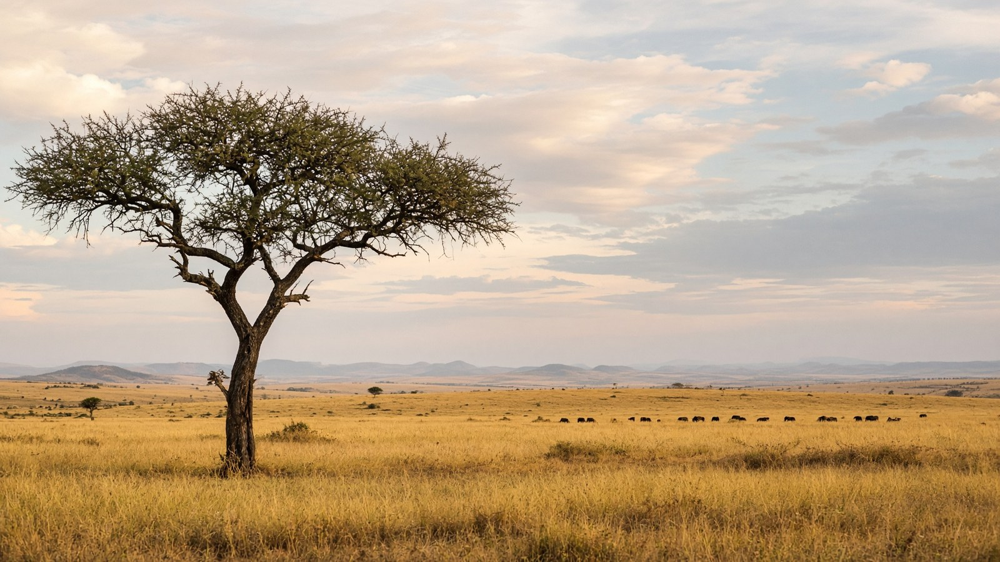

أفريقيا
كينيا
Kenya
السافانا ومقر الأمم المتحدة في أفريقيا.
- العاصمة
- نيروبي
- نظام الحكم
- جمهورية
- التأسيس / الاستقلال
- 12 ديسمبر 1963
- النوع
- جمهورية
منذ التأسيس
استقلت كينيا في 12 ديسمبر 1963. جمهورية عاصمتها نيروبي.
معالم
- طبيعةماساي مارا
هجرة.
- طبيعةكليمنجارو من أمبوسيلي
الفيلة.
- معمارلامو
ساحل سواحلي.